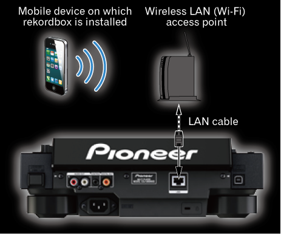

その他
CDJ-2000NXS接続ガイド
モバイルデバイスとCDJ-2000NXSとの通信を確立するには、 CDJ-2000NXSが接続されている無線LAN (Wi-Fi) のアクセスポイントのSSIDとパスワードを最初に確認する必要があります。
CDJ-2000NXSをお使いになる前に、 CDJ-2000NXSに同梱されている｢ご使用の前に (冊子) ｣と｢取扱説明書 (CD-ROM) ｣をよくお読みください。
1無線LAN (Wi-Fi) のアクセスポイントとCDJ-2000NXSとをLANケーブルで接続する

2無線LAN (Wi-Fi) のアクセスポイントの本体や説明書などに記載されているSSIDとパスワードを確認する

3モバイルデバイスのWi-Fi設定画面を開き、 アクセスポイントのSSIDをタップしてからパスワードを入力する

4モバイルデバイス上でrekordboxを起動し、 トップメニューの[Load]をタップする
 通信可能なDJプレーヤーが見つかると、 メッセージ「CDJ/XDJ側でスマートフォンを選択してください」が表示されます。
通信可能なDJプレーヤーが見つかると、 メッセージ「CDJ/XDJ側でスマートフォンを選択してください」が表示されます。

5CDJ-2000NXSの[rekordbox]ボタンを押すと、 通信可能なモバイルデバイスの一覧がCDJ-2000NXS本体の表示部に表示される